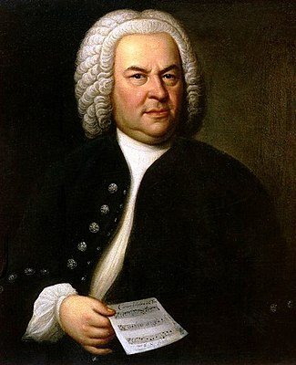

Repetoire
The main development of organ repertoire has progressed along with that of the organ itself, leading to distinctive national styles of composition. Because organs are commonly found in churches and synagogues, the organ repertoire includes a large amount of sacred music, which is accompanimental (choral anthems, congregational hymns, liturgical elements, etc.) as well as solo in nature (chorale preludes, hymn versets designed for alternatim use, etc.).[13] The organ's secular repertoire includes preludes, fugues, sonatas, organ symphonies, suites, and transcriptions of orchestral works.
Although most countries whose music falls into the Western tradition have contributed to the organ repertoire, France and Germany in particular have produced exceptionally large amounts of organ music. There is also an extensive repertoire from the Netherlands, England, and the United States.
Before the Baroque era, keyboard music generally was not written for one instrument or another, but rather was written to be played on any keyboard instrument. For this reason, much of the organ's repertoire through the Renaissance period is the same as that of the harpsichord. Pre-Renaissance keyboard music is found in compiled manuscripts that may include compositions from a variety of regions. The oldest of these sources is the Robertsbridge Codex, dating from about 1360.[99] The Buxheimer Orgelbuch, which dates from about 1470 and was compiled in Germany, includes intabulations of vocal music by the English composer John Dunstaple.[100] The earliest Italian organ music is found in the Faenza Codex, dating from 1420.[101]
In the Renaissance period, Dutch composers such as Jan Pieterszoon Sweelinck composed both fantasias and psalm settings. Sweelinck in particular developed a rich collection of keyboard figuration that influenced subsequent composers.[102] The Italian composer Claudio Merulo wrote in the typical Italian genres of the toccata, the canzona, and the ricercar.[103] In Spain, the works of Antonio de Cabezón began the most prolific period of Spanish organ composition,[104] which culminated with Juan Cabanilles.
 Baroque organ music in Germany was highly contrapuntal. Sacred organ music was based on chorales: composers such as Samuel Scheidt and Heinrich Scheidemann wrote chorale preludes, chorale fantasias, and chorale motets.[104] Towards the end of the Baroque era, the chorale prelude and the partita became mixed, forming the chorale partita.[105] This genre was developed by Georg Böhm, Johann Pachelbel, and Dieterich Buxtehude. The primary type of free-form piece in this period was the praeludium, as exemplified in the works of Matthias Weckmann, Nicolaus Bruhns, Böhm, and Buxtehude.[106] The organ music of Johann Sebastian Bach fused characteristics of every national tradition and historical style in his large-scale preludes and fugues and chorale-based works.[107] Towards the end of the Baroque era, George Frideric Handel composed the first organ concertos.[108]
In France, organ music developed during the Baroque era through the music of Jean Titelouze, François Couperin, and Nicolas de Grigny.[109] Because the French organ of the 17th and early 18th centuries was very standardized, a conventional set of registrations developed for its repertoire. The music of French composers (and Italian composers such as Girolamo Frescobaldi) was written for use during the Mass. Very little secular organ music was composed in France and Italy during the Baroque period; the written repertoire is almost exclusively intended for liturgical use.[110] In England, composers such as John Blow and John Stanley wrote multi-sectional free works for liturgical use called voluntaries through the 19th century.[111][112]
Organ music was seldom written in the Classical era, as composers preferred the piano with its ability to create dynamics.[113] In Germany, the six sonatas op. 65 of Felix Mendelssohn (published 1845) marked the beginning of a renewed interest in composing for the organ. Inspired by the newly built Cavaillé-Coll organs, the French organist-composers César Franck, Alexandre Guilmant and Charles-Marie Widor led organ music into the symphonic realm.[113] The development of symphonic organ music continued with Louis Vierne and Charles Tournemire. Widor and Vierne wrote large-scale, multi-movement works called organ symphonies that exploited the full possibilities of the symphonic organ,[114] such as Widor's Symphony for Organ No. 6 and Vierne's Organ Symphony No. 3. Max Reger and Sigfrid Karg-Elert's symphonic works made use of the abilities of the large Romantic organs being built in Germany at the time.[113]
In the 19th and 20th centuries, organ builders began to build instruments in concert halls and other large secular venues, allowing the organ to be used as part of an orchestra, as in Saint-Saëns' Symphony No. 3.[113] Frequently the organ is given a soloistic part, such as in Joseph Jongen's Symphonie Concertante for Organ & Orchestra, Francis Poulenc's Concerto for Organ, Strings and Tympani, and Frigyes Hidas' Organ Concerto.
Other composers who have used the organ prominently in orchestral music include Gustav Holst, Richard Strauss, Ottorino Respighi, Gustav Mahler, Anton Bruckner, and Ralph Vaughan Williams.[115] Because these concert hall instruments could approximate the sounds of symphony orchestras, transcriptions of orchestral works found a place in the organ repertoire.[116] As silent films became popular, theatre organs were installed in theatres to provide accompaniment for the films.[113]
In the 20th-century symphonic repertoire, both sacred and secular,[117] continued to progress through the music of Marcel Dupré, Maurice Duruflé, and Herbert Howells.[113] Other composers, such as Olivier Messiaen, György Ligeti, Jehan Alain, Jean Langlais, Gerd Zacher, and Petr Eben, wrote post-tonal organ music.[113] Messiaen's music in particular redefined many of the traditional notions of organ registration and technique.[118]